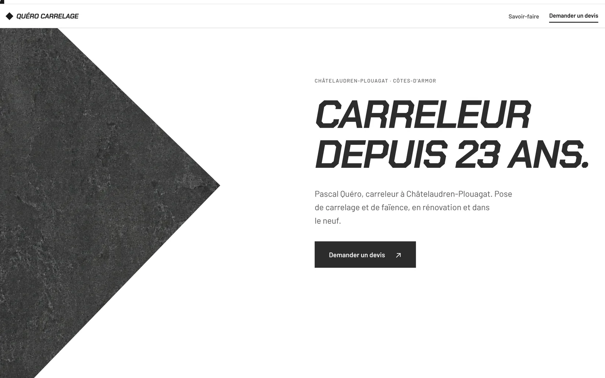
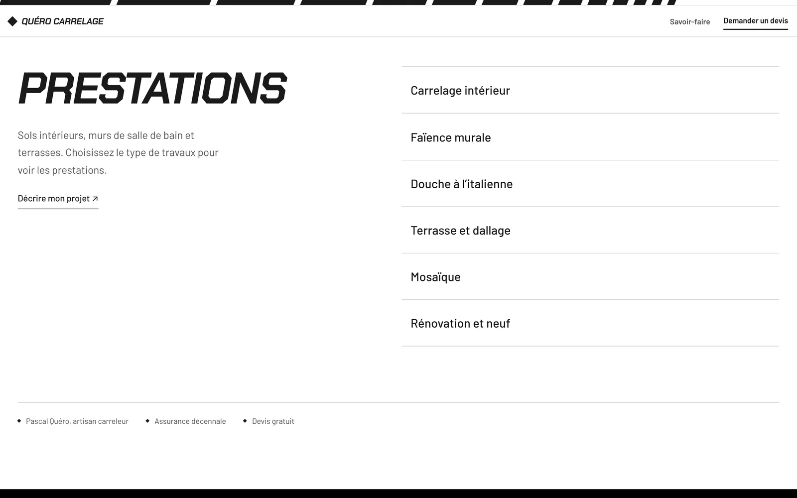
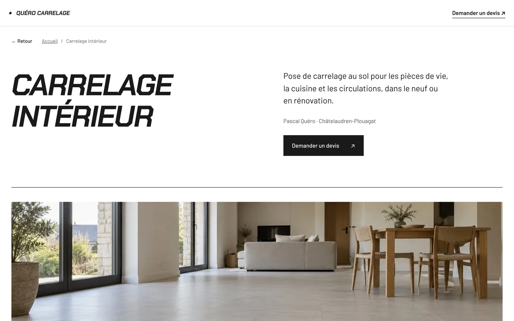

Quéro Carrelage
Conception et développement, 2026
Site vitrine pour un carreleur installé à Châtelaudren-Plouagat, dans les Côtes-d'Armor. L'entreprise travaillait au bouche-à-oreille et n'avait aucune adresse à donner quand on lui demandait où voir son travail. Le site répond à ça : dire ce qu'il fait, où il se déplace, et permettre de demander un devis sans décrocher le téléphone.
Six pages en HTML et CSS écrits à la main, sans gestionnaire de contenu : le contenu d'un artisan bouge peu, et un site statique n'a ni mise à jour à suivre ni base de données à sauvegarder. Une page d'accueil, trois pages de prestations, et les pages légales.

Les écrans
L'accueil
Le métier et le lieu dans les trois premières secondes, puis le bouton de devis. La photo de pose occupe la moitié gauche, coupée en diagonale.
Les prestations
Six entrées listées à droite du titre : carrelage intérieur, faïence murale, douche à l'italienne, terrasse et dallage, mosaïque, rénovation et neuf. Chacune mène à sa page.

Une page de prestation
Une page par type de travaux, avec les communes desservies écrites en toutes lettres : c'est ce qu'un voisin tape dans son moteur de recherche.

La demande de devis
Cinq champs seulement, dont un facultatif. La commune et le type de travaux sont demandés d'emblée : ce sont les deux réponses sans lesquelles il faut rappeler avant de pouvoir chiffrer.
Vous avez un projet similaire ?
Discutons-en